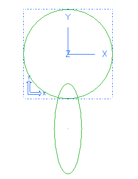

| Next Page | Previous Page | First Page |

Sketch on workplane a Circle approx 200mm diameter.
Sketch an Ellipse so that the center is aligned with the center of the circle.
Draw a Polyline from the circle center to the ellipse center and then horizontal to the ellipse edge.
Draw 3 lines, from the ellipse center to the ellipse bottom edge.